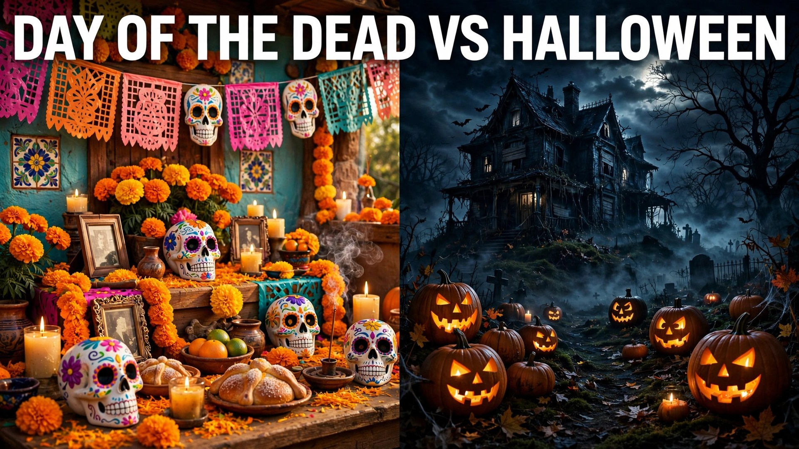

Every late October, two of the world's most visually striking celebrations share the calendar: Halloween on October 31 and Día de los Muertos, the Day of the Dead, on November 1 and 2. Both feature skulls, candles, and costumes — which is why they are constantly confused. But they are fundamentally different holidays with different roots, moods, and meanings. Halloween is a night of playful fright; Day of the Dead is a joyful, deeply loving reunion with ancestors.
Understanding the difference matters, especially as Day of the Dead imagery becomes more popular in Halloween decor and costumes. This guide explains each celebration's origins, what it means to the people who observe it, the traditions that define it, and how you can appreciate both respectfully in 2026.
What Is Halloween? Origins and Meaning
Halloween traces back to Samhain, the ancient Celtic festival marking the end of harvest and the start of winter, when the boundary between the living and the dead was believed to thin. Christian tradition layered All Saints' Day (November 1) over it, and Irish immigrants brought the customs to America in the 1800s. Today's Halloween is largely secular and commercial: costumes, trick-or-treating, haunted houses, horror movies, and parties. Its emotional core is playful fear — confronting the spooky in a safe, fun context. In 2026, Halloween falls on Saturday, October 31, which only amplifies the celebration.
What Is Day of the Dead? Origins and Meaning
Día de los Muertos is a Mexican tradition with roots in Indigenous Aztec rituals honoring the dead, later blended with Catholic All Saints' and All Souls' Days. Far from morbid, it is a warm, festive homecoming: families believe the spirits of loved ones return to visit, so they welcome them with ofrendas (altars) decorated with marigolds, candles, photos, and the deceased's favorite foods and drinks. Celebrated November 1 (honoring children, Día de los Inocentes) and November 2 (adults), it treats death not as an ending to fear but as a natural part of life to embrace — with music, food, and storytelling. UNESCO recognizes it as Intangible Cultural Heritage of Humanity.
Key Differences at a Glance
- Purpose: Halloween is about spooky fun and playful fright; Day of the Dead is about honoring and welcoming deceased loved ones.
- Mood: Halloween leans scary, silly, and thrilling; Day of the Dead is joyful, reverent, and celebratory.
- Dates: Halloween is October 31; Day of the Dead is November 1–2.
- Origins: Halloween comes from Celtic and Christian European traditions; Day of the Dead comes from Indigenous Mexican and Catholic traditions.
- Core activity: Halloween centers on costumes, trick-or-treating, and parties; Day of the Dead centers on building ofrendas, visiting cemeteries, and family gatherings.
- Skulls: Halloween skulls are meant to frighten; sugar skulls (calaveras) are colorful tributes inscribed with names of the living or dead.
- Tone toward death: Halloween plays with fear of death; Day of the Dead embraces death as part of life's cycle.
Shared Themes: Why They Get Compared
The confusion is understandable. Both holidays cluster around the same week, both use skull and skeleton imagery, both involve dressing up, and both acknowledge the dead in some way. Global pop culture has also blended their aesthetics — sugar skull makeup appears at Halloween parties, and Halloween-style skeletons decorate Day of the Dead displays. The overlap is visual, not spiritual. Think of it this way: Halloween asks "what scares you?", while Day of the Dead asks "who do you miss?" Once you frame it that way, the difference is unmistakable.
Traditions and Symbols of Each
Halloween's icons are the jack-o'-lantern, black cats, witches, ghosts, bats, and haunted houses — symbols of fright and mystery. Day of the Dead's icons carry specific meaning: marigolds (cempasúchil) whose scent guides spirits home, candles lighting their path, papel picado (cut-paper banners) representing the fragility of life, sugar skulls as playful mementos, and pan de muerto (bread of the dead) shared by the living. Ofrendas are built with intention — photos of the departed, their favorite dishes, water for their journey, and personal mementos — and families often spend the night in cemeteries, eating, singing, and remembering together.
How to Respectfully Enjoy Both in 2026
You can absolutely appreciate both celebrations — many Mexican-American families do — as long as respect leads. Enjoy Halloween's costumes and parties on October 31, and if Day of the Dead imagery appeals to you, learn what it means first. Avoid wearing traditional calavera makeup as a generic "sexy skeleton" Halloween costume without understanding it; if you do wear it, do so thoughtfully and learn the tradition behind it. Better ways to engage: visit a local Day of the Dead exhibition or community ofrenda, try pan de muerto from a Mexican bakery, or build a small remembrance altar for your own loved ones. Appreciation means learning the story, not just borrowing the aesthetic.
How Day of the Dead Is Celebrated Around the World
While Mexico is the heart of Día de los Muertos, the celebration has spread far beyond its borders. In the United States, cities with large Mexican-American communities — Los Angeles, San Antonio, Chicago — host massive public ofrendas, candlelit processions, and cultural festivals each November. Guatemala marks the season with giant colorful kites flown over cemeteries on November 1, believed to carry messages to the dead. In the Philippines, Undas sees families camping overnight in cemeteries with food and music. Haiti's Fet Gede honors ancestral spirits with vibrant ceremonies in early November. Even in places without direct ties, museums and cultural centers now build community ofrendas inviting everyone to contribute photos of loved ones. If you want to experience the holiday beyond Halloween imagery, look for a local cultural festival in 2026 — the food, music, and artistry are unforgettable, and you will leave with a deeper understanding than any costume could give.